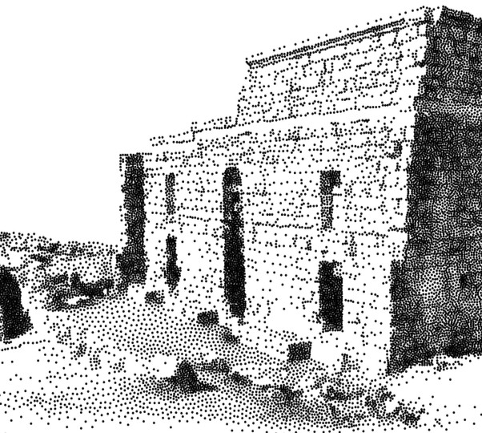

| 2019 | |
|---|
|
Quantifying Visual Abstraction Quality for Computer-Generated Illustrations
Marc Spicker, Franz Götz-Hahn, Thomas Lindemeier, Dietmar Saupe, Oliver Deussen
ACM Transactions on Applied Perception, Vol. 16 Issue 1 (2019), P. 5:1-5:20
[PDF (9.7 MB)]
[Web]
[DOI]
|
| 2018 | |
|---|
|
Neural Networks for the Classification of Building Use from Street-View Imagery
Dominik Laupheimer, Patrick Tutzauer, Norbert Haala, Marc Spicker
ISPRS Annals of the Photogrammetry, Remote Sensing and Spatial Information Sciences, Vol. IV-2 (2018)
[PDF (6.6 MB)]
[DOI]
|
 |
Interactive testbed for research in autism - the SARA project
Diana Arellano, Reinhold Rauh, Benjamin Krautheim, Marc Spicker, Ulrich Schaller, Volker Helzle, Oliver Deussen
Universal Access in the Information Society Vol. 17.1 (2018), P. 21-36
[PDF (6.5 MB)]
[Web]
[DOI]
|
| 2017 | |
|---|
|
Weighted Linde-Buzo-Gray Stippling
Marc Spicker, Oliver Deussen, Qian Zheng
ACM Transactions on Graphics 36.6 (2017), P. 233:1-233:12
[PDF (30.9 MB)]
[Web]
[Video]
[Presentation (62.9 MB)]
[Supplemental (20.4 MB)]
[Code]
[DOI]
|
|  |
Quantifying Visual Abstraction Quality for Stipple Drawings

Marc Spicker, Franz Hahn, Thomas Lindemeier, Dietmar Saupe, Oliver Deussen
Proceedings of the Symposium on Non-Photorealistic Animation and Rendering (2017), P. 8:1-8:10
[PDF (5.1 MB)]
[Web]
[Presentation (10 MB)]
[DOI]
|
|
Structure-aware Stylization of Mountainous Terrains
Julian Kratt, Ferdinand Eisenkeil, Marc Spicker, Yunhai Wang, Daniel Weiskopf, Oliver Deussen
Proceedings of the Symposium on Vision, Modeling, and Visualization (2017)
[PDF (9.4 MB)]
[Web]
[Video]
[DOI]
|
| 2016 | |
|---|
|
Artistic Composition for Painterly Rendering
Thomas Lindemeier, Marc Spicker, Oliver Deussen
Proceedings of the Symposium on Vision, Modeling, and Visualization (2016)
[PDF (19.9 MB)]
[Web]
[Video]
[Presentation (21.2 MB)]
[DOI]
|
|
Emotion Recognition in Autism Spectrum Disorder: Does Stylization Help?
Marc Spicker, Diana Arellano, Ulrich Schaller, Reinhold Rauh, Volker Helzle, Oliver Deussen
Proceedings of the ACM Symposium on Applied Perception (2016), P. 97-104
[PDF (3.4 MB)]
[Web]
[DOI]
|
| 2015 | |
|---|
|
On the Trail of Facial Processing in Autism Spectrum Disorders
Diana Arellano, Ulrich Schaller, Reinhold Rauh, Volker Helzle, Marc Spicker, Oliver Deussen
Intelligent Virtual Agents: 15th International Conference, IVA 2015, Delft, The Netherlands
[PDF (1.7 MB)]
[Web]
[DOI]
|
|
The SARA Project: An Interactive Sandbox for Research on Autism
Diana Arellano, Volker Helzle, Ulrich Schaller, Reinhold Rauh, Marc Spicker, Oliver Deussen
Proceedings of the XVI International Conference on Human Computer Interaction
[PDF (5.2 MB)]
[DOI]
|
|
Depth-aware Coherent Line Drawings
Marc Spicker, Julian Kratt, Diana Arellano, Oliver Deussen
SIGGRAPH Asia 2015 Technical Briefs (2015), P. 1:1-1:5
[PDF (6.6 MB)]
[Web]
[Presentation (14.9 MB)]
[DOI]
|
|
Woodification: User-Controlled Cambial Growth Modeling
Julian Kratt, Marc Spicker, Alejandro Guayaquil, Marek Fiser, Sören Pirk, Oliver Deussen, Bedrich Benes
Computer Graphics Forum 34.2 (2015), P. 361-372
[PDF (15 MB)]
[Web]
[Video]
[DOI]
|
| 2012 | |
|---|
|
Interactive Visualization for Real-Time Public Transport Journey Planning
Josua Krause, Marc Spicker, Leonard Wörteler, Matthias Schäfer, Leishi Zhang, Hendrik Strobelt
SIGRAD, Nov 29, 2012 - Nov 30, 2012, Växjö, Sweden
[PDF (6.3 MB)]
[Video]
[Code]
|
|
Rolled-out Wordles: A Heuristic Method for Overlap Removal of 2D Data Representatives
Hendrik Strobelt, Marc Spicker, Andreas Stoffel, Oliver Deussen
Computer Graphics Forum 31.3pt3 (2012), P. 1135-1144
[PDF (0.7 MB)]
[Web]
[DOI]
|